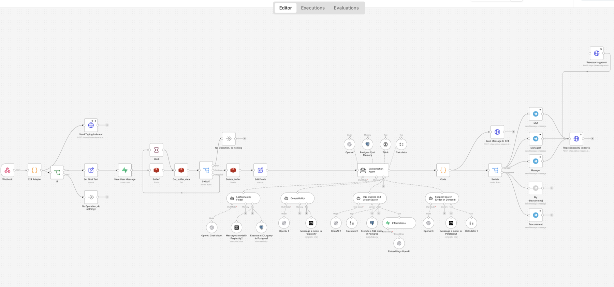
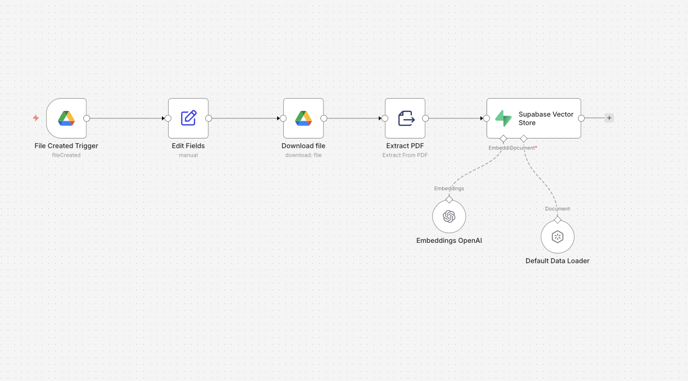

node: ai-agent
in production
AI Sales Agent “Petr” — conversational commerce
Problem: an e-commerce store with 20,000 SKUs (laptop parts) — managers can’t cover every chat, and off-the-shelf chatbots can’t actually sell from a live catalog: check stock, pick compatible parts, quote price and delivery.

the actual production workflow — 46 nodes, live on the site & CRM
- Multi-tool orchestration (LangChain agent): SQL + vector search, product compatibility, laptop-matrix finder, calculator, reasoning tool.
- Hybrid RAG — Supabase pgvector + PostgreSQL: vectors alone fail on exact part numbers, SQL alone fails on fuzzy human questions.
- Supplier fallback: out of stock → the agent searches supplier sites, calculates delivery & final price, and signals procurement what to buy.
- Cost-aware model routing (gpt-5 → gpt-5-mini → gpt-4.1) + Redis message-debounce. Token cost is a production constraint — I treat it like one.
- Human-in-the-loop: hands off to a live manager at the right moment; Telegram alerts to manager & procurement.

knowledge-ingestion pipeline: Drive → PDF → embeddings → vector store
n8nLangChainOpenAI gpt-5 / 4.1Supabase pgvectorPostgreSQLRedisTavilyBitrix24Telegram